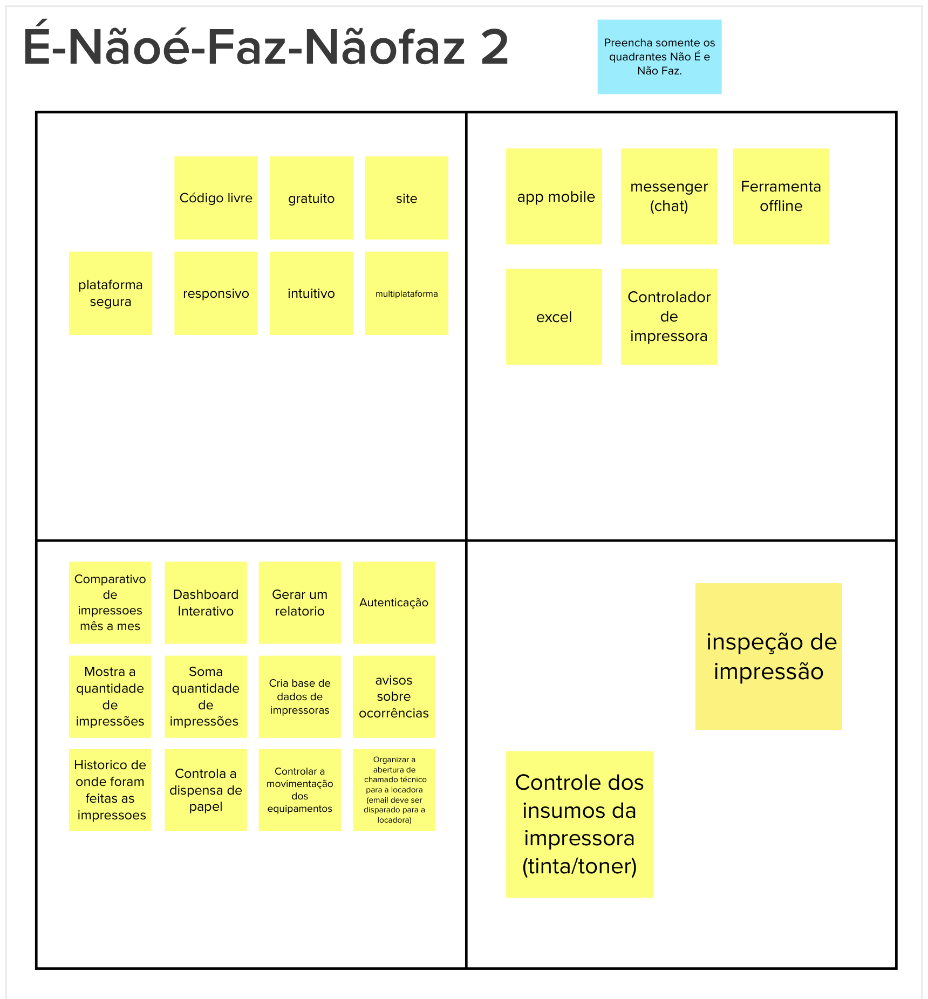

É, Não é, Faz, Não faz
1. Definição
A atividade É - Não É - Faz - Não Faz ajuda a definir um tópico (seja um produto, um time ou uma estratégia). Por vezes, é mais fácil descrever algo pelo que tal coisa não é ou deixa de fazer. Essa atividade busca clarificações desta forma, indagando, especificamente, cada aspecto positivo e negativo sobre ser ou fazer algo.
Durante esta etapa no Lean Inception, a equipe colabora para estabelecer de forma precisa os limites do escopo do produto ou projeto. Essa abordagem é essencial para estabelecer critérios definidos e evitar ambiguidades na definição do escopo.
A Versão 1 foi feita por integrantes do time, em uma reunião, e após validação com os clientes, a Versão 2 foi criada.
2. Resultado
Versão 1:

Versão 2:

3. Referências
[1] EQUIPE ALECTRION 2022-2. É, Não é, Faz, Não faz. Disponível em: https://fga-eps-mds.github.io/2022-2-Alectrion-DOC/#/./Leaninception/e-naoe-faz-naofaz
[2] Lean Inception - Como alinhar pessoas e construir o produto certo. Paulo Caroli.
4. Histórico de versão
| Data | Descrição | Autor(es) |
|---|---|---|
| 28/09/2023 | Criação do Documento | Vitor Diniz |
| 28/09/2023 | Revisão do Documento | Antonio Rangel |
| 28/09/2023 | Revisão do Documento | Júlia Farias |